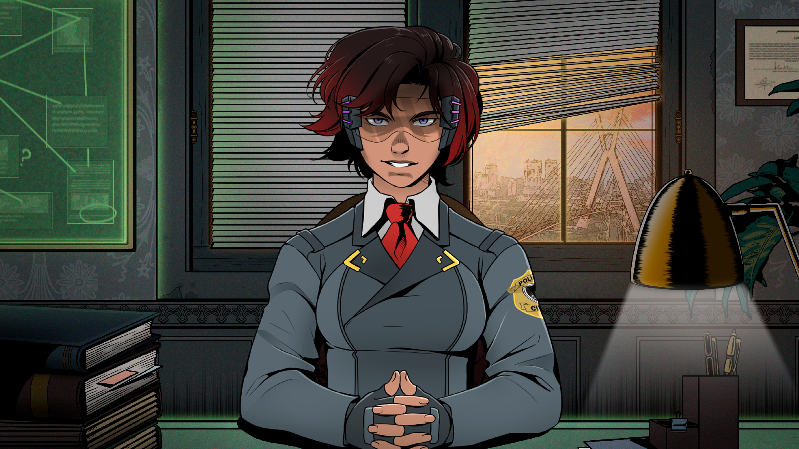

Intrusion
Intrusion is a visual novel created in just one week for the second Farmando XP Game Jam.
The development process proved particularly challenging, as I not only composed all the music and sound effects but also programmed the entire game single-handedly.
The game is set in a retrofuturistic, dystopian version of São Paulo, heavily inspired by the Art Deco aesthetic found in the city's historic downtown architecture. This visual style extends to both character designs and environments, drawing stylistic influences from works like BioShock and Arcane in its atmospheric world-building.

With limited time to dedicate to the music, I decided to take the most straightforward route. Since Art Deco is an aesthetic rooted in the 1920s, it's contemporary to old jazz music, which made it the perfect choice for the game’s soundtrack.
With that in mind, I composed the first and main song for the game. My goal was to create an all-purpose track that could seamlessly fit into any situation. This is likely why many players have described the piece as "elevator music"—a comparison that might sound underwhelming at first, but it was precisely what I had intended.Clearly, relying on just one bland track for the entire game wasn’t the best idea—especially for an investigative game that depends so heavily on mystery and tension to keep players engaged. Additionally, while the game’s aesthetic draws from the past, it’s meant to be retrofuturistic. To fully shape its identity, incorporating more futuristic elements was essential.
The next track introduces thrilling strings to convey a sense of urgency, while retaining the bass and drums from the previous track to maintain consistency. Electronic sound effects were also incorporated.
The third and final track was composed to evoke a serene yet mysterious atmosphere. By incorporating staccato notes, echo, and delay, it conveys the sense of a vast, enigmatic environment waiting to be explored and uncovered.
The instrument choices in this piece diverge significantly from the jazzy foundation established earlier. Rather than using a Rhodes piano, this piece features a traditional piano accompanied by an ensemble of strings, marking a deliberate shift in tone.
Working on the soundtrack for Intrusion was a great experience, even though I had very little time to dedicate to it and couldn’t give it the focus I wanted. While the result is far from perfect, game jams are ultimately about being less critical of your own work in order to meet the deadline.
The deadline is what truly matters!